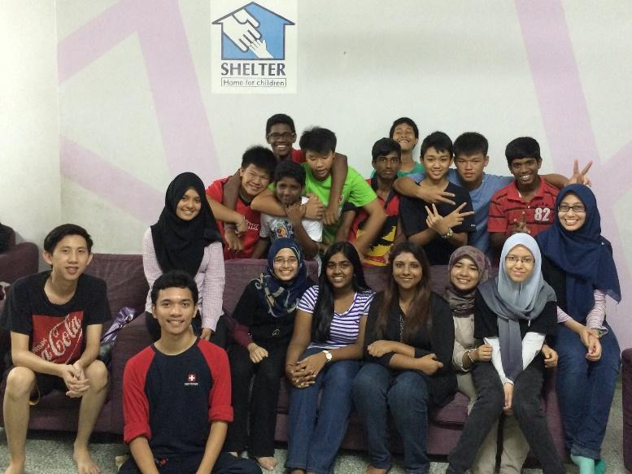
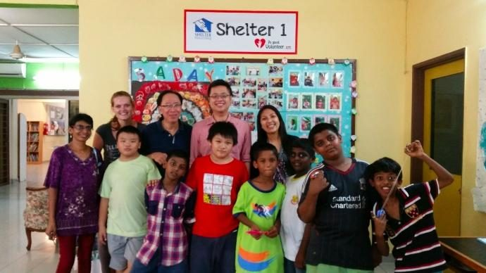

BACKGROUND INFORMATION OF SHELTER (Home for Children)
OUR MISSION
- To rescue and protect children from the trauma of physical and sexual abuse, extreme neglect, being abandoned and being a victim or witness of domestic violence.
-To help the children overcome their initial trauma and restore self-acceptance, dignity and their trust in humanity by giving them unconditional love, care and an education.
- To unite the children with their families where possible.
- To reinforce the above by regular follow-up so that they can become useful citizens.


SHELTER, a registered welfare organization, has been in existence since 1981 to help abused, abandoned, neglected or at-risk children.
SHELTER Home for Children started as a result of the vision of a group of seven friends who wanted to help the children in a squatter settlement along Old Klang Road. They initiated tuition classes so that the children could do better in their studies.
When the group found three homeless boys sleeping in the corridors of the State Cinema (now Lotus Restaurant, at New Town, Petaling Jaya) the group decided to rent a single storey bungalow in Section 12, Petaling Jaya. "All that we had was an empty house without any furniture. We sat, ate and slept on the floor. But, in the end, the boys stole some money and ran away!" said Mr James Nayagam, former Executive Director of SHELTER, one of the seven friends who started SHELTER.
Not disheartened, the group of friends decided to bring one of the families from the settlement who had been evicted from their house, to stay in the house in Section 12. Most families in the settlement were living on rented premises but found it difficult to pay the rent.
As numbers in the home increased, we moved to our present premises at Jalan Tinggi, Petaling Jaya. Various groups helped by providing tuition and even fostered those in need of foster care placement.
In time, SHELTER established 10 kindergartens in squatter settlements with the first one being in Damansara Dalam (1989). A nominal fee of RM5 was charged per student. These kindergartens were an effort in helping children from underprivileged homes to have a good start in life. SHELTER decided to close down the kindergartens after 15 years of operation when we noticed a dramatic drop in the number of children attending our kindergartens - urban affluence had also affected low income families in their perception and preferences for education for their children.
Read More